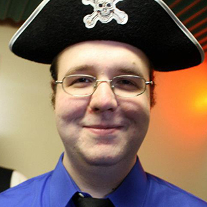
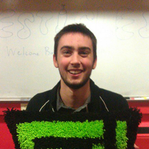
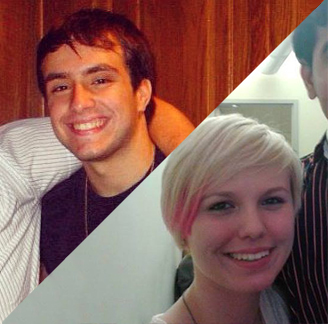

The CSH Executve Board, or E-Board, is a group of directors who manage all aspects of House's affairs. Through weekly meetings and active involvement on floor, the E-Board members keep CSH running smoothly.
-

Chairman
Grant Cohoe
The Chairman of CSH serves as the “head of E-Board”, supervising the activities of the Directors and presiding over our weekly House Meetings. The Chairman is also the primary spokesperson for House, representing the interests of our members in communications with RIT and the rest of the world. The chairman also casts the tie-breaking vote on E-Board decisions, if needed.
-
Evaluations
Gabbie Burns
”Eval“ is responsible for connecting with the RIT student community, as well as screening, accepting, and orienting new members. Eval is why current members are here today!
If you would like to visit or tour the floor, let the Eval Director know and he/she can arrange this. -
Financial
Ben Centra
Financial is responsible for managing CSH's finances, collecting semesterly member dues, and hatching new fundraising schemes. All of our money goes towards new resources and project components for members to use; CSH is a registered non-profit organization with an annual self-generated budget.
-
House History
Connor Monahan
History's primary responsibility is keeping the line of communication between CSH and our alumni open. We believe members should have a well-developed sense of House's origins and accomplishments. History keeps the past alive through the yearbook, Coredump newsletter, floor displays, archiving, updating the media database, and managing alumni relations. History also coordinates alumni storytelling nights and other traditional events.
-
House Improvements
Josh McSavaney
”Imps“ is responsible for keeping our living space respectable and comfortable. The Imps director delegates projects that improve the physical aspects of floor, such as painting, cleaning, building, and organizing House's resources. While we may not be the tidiest group of people, we like to take care of our floor, and it shows.
-

OpComm
William Dignazio
The OpComm director, together with a group of technically skilled members known as RTPs, is responsible for maintaining CSH's servers and network infrastructure. Becoming an RTP allows members to develop and practice skills that are essential for working in computing fields. If you have any questions about House's technical resources, the OpComm director should be your first stop.
-

Research and Development
Duncan Keller
"R&D" is responsible for organizing seminars and assisting with technical projects, with the goal of encouraging members to learn new skills and gain experience.
-

Social
Michail Yasonik & Benjamin Meyer
Social is responsible for planning and running social events for our members, such as diner runs, movie nights, project work weekends, and more.